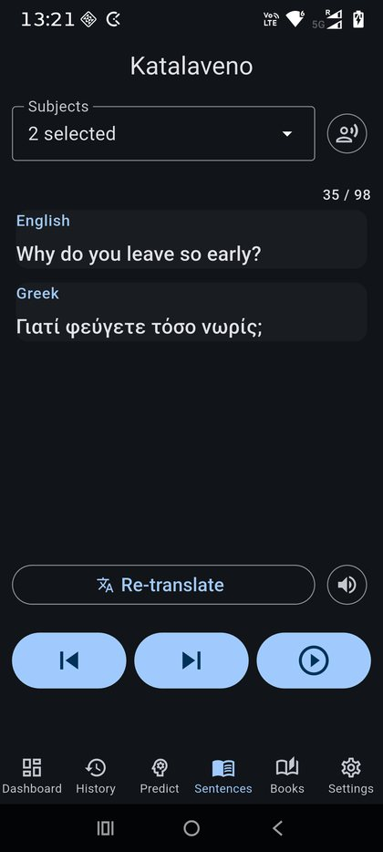
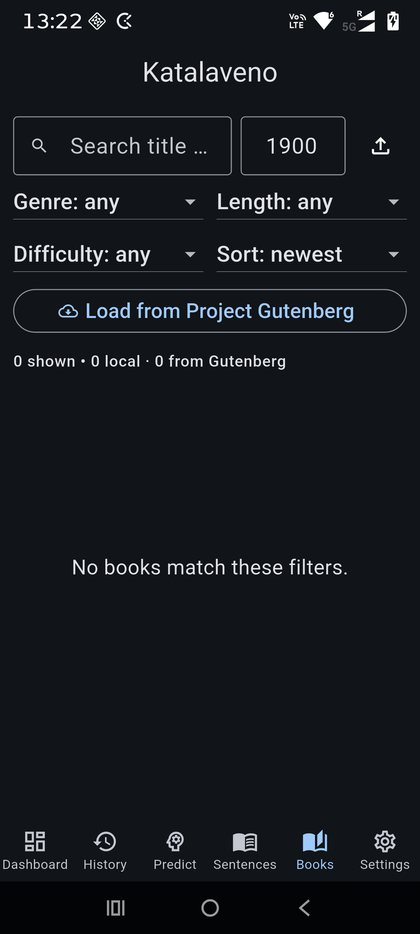
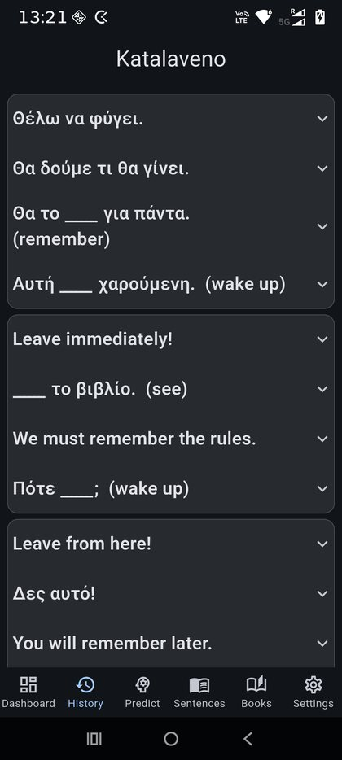

katalaveno
katalaveno
a mobile language-learning companion, built with Flutter.
Katalaveno is a personal experiment in using software to support the challenge of learning a new and difficult language. It is meant to complement traditional learning, not replace it.
The idea is to keep useful language material returning during the day, especially through listening, repetition, sentence generation, and phone notifications.
Current modes include:
-

Sentence bank — enter sentences in a known language, use AI to translate them into the target language, and listen to both using text-to-speech.
-

Listening mode — load local text, or connect to an available free text source, then listen to it in small chunks together with AI translation.
-

Difficult words — enter words that are hard to remember, generate sentences using those words and their conjugated forms, and receive them as daily phone notifications with different exercise styles, including missing-word and cloze-style prompts.
The app uses Gemini for translation and provides a link for getting an API key. Free translation quota can be limited, but translated material is cached locally, so once something has been generated it can be reused without repeatedly calling the translation service.
Katalaveno was built from the start with the help of coding agents, mainly Codex and Claude Code. This was part of the experiment: not only building the app, but also seeing which parts of a real project AI could handle well, and which parts still needed careful human direction.
The experience was mixed but useful. The agents were especially helpful with connecting to external services such as translation, text-to-speech generation, downloads, and text sources. On the other hand, some of the code they produced was more complicated and less coherent than I would normally want.
So, overall, the app is also a record of learning how to work with AI as a development partner: useful, sometimes impressive, sometimes messy, and definitely a positive experience.